Descriptive Statistics
The Descriptive statistics procedure displays univariate summary statistics for selected variables. Descriptive statistics can be used to describe the basic features of the data in a study. It provides simple summaries about the sample and the measures. Together with simple graphical analysis, it can form the basis of quantitative data analysis.
How To
Run Statistics→Basic Statistics→Descriptive Statistics.
Select one or more variables.
Optionally, use the Plot histogram option to build a histogram with frequencies and normal curve overlay for each variable. Normal curve overlay is not available when a report is viewed in Apple Numbers, because of a lack of combined charts support in the Apple Numbers app.
By default, a table with descriptive statistics is produced for each variable. To view descriptive statistics for all variables in a single table – select the “Single table” value for the Report option.
Report: For each variable |
Report: Single table |
|
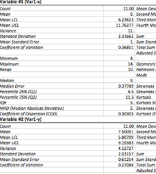 |
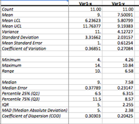 In single table view the first column is frozen, so you can scroll through the report while the heading column stays still. |
Optionally, select a method for computing percentiles. Percentiles are defined according to Hyndman and Fan (1996), see below for details.
Results
Table with summary statistics is produced for each variable. The table includes following statistics.
Count ( ) - sample size.
) - sample size.
Mean – arithmetic mean. The larger the sample size, the more reliable is its mean. The larger the variation of data values, the less reliable the mean.
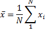
Mean LCL, Mean UCL – are the
lower value (LCL) and upper value (UCL) of 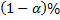 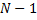
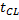 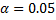 can
be changed in the Preferences.
can
be changed in the Preferences.
–
estimated standard error of the mean.
LCL is for Lower Confidence Limit and UCL is for Upper
Confidence Limit.
Variance (unbiased estimate) - is the mean value of the square of the deviation of that variable from its mean with Bessel's correction.
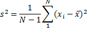
Population variance is estimated as
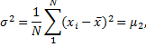
where is second moment (see below).
Standard deviation - square root of the variance.
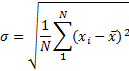
Standard Error (of Mean) - quantifies the precision of the mean. It is a measure of how far your sample mean is likely to be from the true population mean. The formula shows that the larger the sample size, the smaller the standard error of the mean. More specifically, the size of the standard error of the mean is inversely proportional to the square root of the sample size.
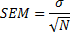
Minimum – the smallest value for a variable.
Maximum – the largest value for a variable.
Range - difference between the largest and smallest values of a variable. For normally distributed variable dividing the range by six can make a quick estimate of the standard deviation.
Sum – sum of the sample values.
Sum Standard Error - standard deviation of sums distribution.
Total Sum Squares - the sum of the squared values of the variable. Sometimes referred to as the unadjusted sum of squares.
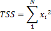
Adjusted Sum Squares - the sum of the squared differences from the mean.
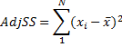
Geometric Mean - a type of mean, which indicates the central tendency of a set of numbers. It is similar to the arithmetic mean, except that instead of adding observations and then dividing the sum by the count of observations N, the observations are multiplied, and then the nth root of the resulting product is taken. Geometric mean is used to find average rates of change, average rates of growth or average ratios.
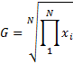
Harmonic Mean - or subcontrary mean, the number defined as
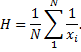
As seen from the formula above, harmonic mean is the reciprocal of the arithmetic mean of the reciprocals. Harmonic mean is used to calculate an average value when data are measured as a rate, such as ratios (price-to-earnings ratio or P/E Ratio), consumption (miles-per-gallon or MPG) or productivity (output to man-hours).
Mode - the value that occurs most frequently in the sample. The mode is a measure of central tendency. It is not necessarily unique since the same maximum frequency may be attained at different values (in this case #N/A is displayed).
Skewness – a measure of the asymmetry of the variable. A value of zero indicates a symmetrical distribution, i.e. Mean = Median. The typical definition is:
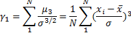
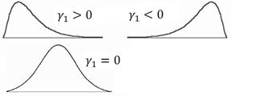
There are different formulas for estimating skewness and kurtosis (Joanes, Gill, 1998). The formula above is used in many textbooks and some software packages (NCSS, Wolfram Mathematica). Use the Skewness (Fisher's) value to get the same results as in SPSS, SAS and Excel software.
Skewness Standard Error – large sample estimate of the standard error of skewness for an infinite population.
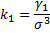
Kurtosis - a measure of the "peakedness" of the variable. Higher kurtosis means more of the variance is the result of infrequent extreme deviations, as opposed to frequent modestly sized deviations. If the kurtosis equals three and the skewness is zero, the distribution is normal.
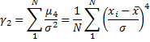
If 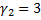 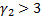 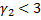
If
If
|
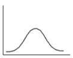
|
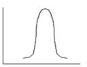
|
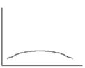
|
Biased estimate for kurtosis is
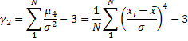
There are different formulas for estimating skewness and kurtosis (Joanes, Gill, 1998). The formula above is used in many textbooks and some software packages (NCSS, Wolfram Mathematica). Use the Kurtosis (Fisher's) value to get the same results with SPSS, SAS and Excel software.
Kurtosis Standard Error - large sample estimate of the standard error of kurtosis for an infinite population.
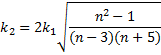
Skewness (Fisher's) – a bias-corrected measure of skewness. Also known as Fisher's Skewness g1.
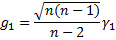
Kurtosis (Fisher's)- an alternative measure of kurtosis based on the unbiased estimators of moments. Also known as Fisher's Kurtosis g2.
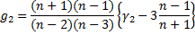
Coefficient of Variation - a
normalized measure of dispersion of a probability distribution. Defined only for
non-zero mean, and is most useful for variables that are always positive. It is
also known as unitized
risk or the variation
coefficient. 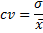
Mean Deviation (Mean Absolute Deviation, MD) - mean of the absolute deviations of a set of data about the data's mean.
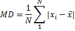
Second Moment, Third Moment, Fourth Moment – central moments about the mean. A jth central moment about the mean is defined as
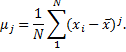
Second moment is a biased variance estimate.
Median - the observation that splits the variable into two halves. The median of a sample can be found by arranging all the sample values from lowest value to highest value and picking the middle one. Unlike the arithmetic mean, the median is robust against outliers.
Median Error - the number defined by 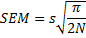
Percentile 25% (Q1) - value
of a variable below which 25% percent of observations fall.
Percentile 75% (Q2) - value of a variable below
which 75% percent of observations fall.
Percentile Definition
You can change the percentile
calculation method in the Advanced Options. Nine
methods from Hyndman and Fan (1996) are implemented. Sample quantiles are based
on one or two order statistics and can be written as 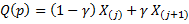 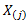 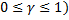 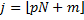 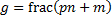
Discontinuous definitions |
|
|
1. Inverse of EDF (SAS-3) |
The oldest
and most studied definition that uses the inverse of the empirical
distribution function (EDF). 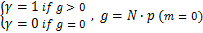 |
|
2. EDF with averaging (SAS-5) |
Similar to the previous definition, but averaging is used when . 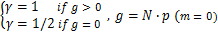 |
|
3. Observation closest to N*p (SAS-2) |
Defined as
the order statistic 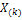 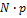 |
Continuous definitions |
|
|
4. Interpolation of EDF (SAS-1) |
Defined as
the linear interpolation of function from the first definition, 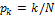 |
|
5. Piecewise linear interpolation of EDF (midway values as knots) |
Piecewise linear function with knots defined as values midway through the steps of the EDF, . |
|
6. Interpolation of the expectations for the order statistics (SPSS, NIST) |
Knots are
defined as the order statistics expectations. In definitions 6 – 8, 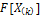 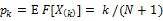 |
|
7. Interpolation of the modes for the order statistics (Excel) |
Linear
interpolation of the order statistics modes. 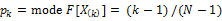 |
|
8. Interpolation of the approximate medians for order statistics |
Linear interpolation of the order
statistics medians. Median position 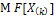 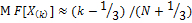 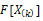 . |
|
9. Blom's unbiased approximation |
This
definition, proposed by Blom (1958), is an approximately unbiased
approximation of , when is normal. |
IQR (Interquartile Range, Midspread)
– the difference between the third quartile and the first quartile (between the
75th percentile and the 25th percentile). IQR represents the range of the
middle 50 percent of the distribution. It is a very robust (not affected by
outliers) measure of dispersion. The IQR is used to build box plots.
MAD (Median Absolute Deviation)
- a robust measure of the variability of a univariate sample of quantitative
data. The median absolute deviation is a measure of statistical dispersion. It
is a more robust estimator of scale than the sample variance or standard
deviation.
Coefficient of Dispersion – a measure of relative inequality (or relative variation) of the data. Coefficient of dispersion is the ratio of the Average Absolute Deviation from the Median (MAAD) to the Median of the data.
Histogram for each variable is plotted if the corresponding option is selected in the Advanced Options. To specify the bins manually – please use the Statistics→Basic Statistics →Histogram command.
References
Blom G. (1958). Statistical estimates and transformed beta-variables. New York: Wiley.
Hyndman, R.J., Fan, Y. (November 1996). "Sample Quantiles in Statistical Packages", The American Statistician 50 (4): pp. 361–365.
Joanes, D. N., Gill, C. A. (1998), Comparing measures of sample skewness and kurtosis. The Statistician, 47, 183–189.